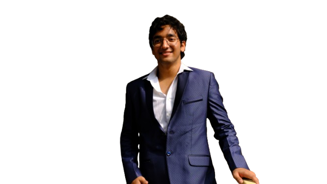

Learning
Python
Learning practical programming for logic, data, and small useful tools.
A field note from someone learning how care can become more capable, accessible, and human.

01 / About
A biomedical science student following the questions where care, technology, and clear design can meet.
02 / Capability
Learning
Learning practical programming for logic, data, and small useful tools.
Learning
Building a basic understanding of how useful information is structured and queried.
Familiar
Using basic Figma to shape clear visual directions and early interface ideas.
Familiar
Creating short-form social content with clear edits and a focused message.
Practicing
Practicing content and outreach that help community work travel further.
Practicing
Working with people and schools to support community drives on the ground.
03 / Work in the making
I’m early in my building journey, so this section is honest. It will grow as I take ideas from question to prototype.
In progress / Personal build
A living digital identity documenting my interests, developing skills, and first steps toward medical technology.
More coming.
04 / The path
Vidya Bal Bhawan Sr. Sec. School.
A year spent focused on NEET before choosing my path.
Scored 99% and secured a seat at the University of Delhi.
Bhaskaracharya College of Applied Sciences, University of Delhi.
Prabhav Trust. Creating content for social channels, connecting with schools for community drives, and volunteering on the ground.